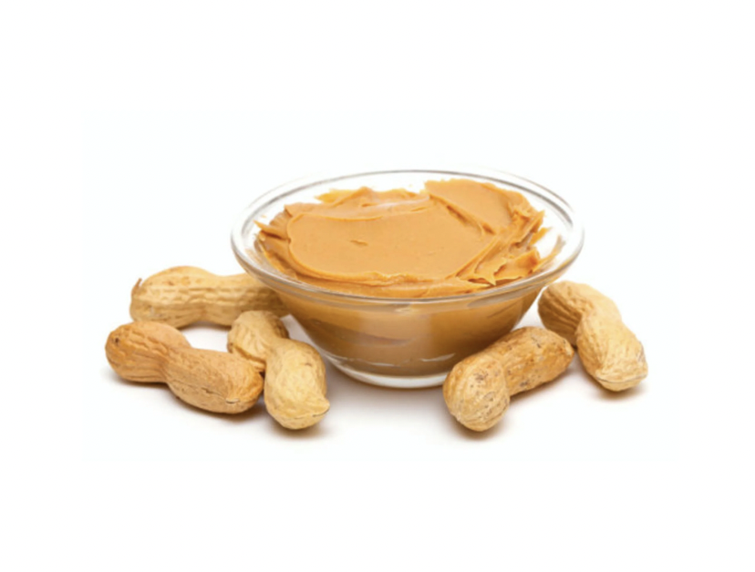

How to Make the Best PB & Honey
Getting Started
Ingredients
- Jiff Crunchy Peanut Butter
- Honey
- Bannana
- Two Slices of White Bread

Supplies
Instrustions
Step 1
- Put two slices of white bread in the toater
Step 2
- After the toast is done, spread 2 Tbsp of peanut butter on one side of toast
Step 3
- Squeeze a light drizzle of honey acroos the top of the peanut butter
Step 4
- Spread about 1 Tsp of additional peanut butter on the reaining slice of toast
Step 5
- Cut your bannana into thin slices and spread across the toast without honey
Step 6
- Put both slices together and enjoy!